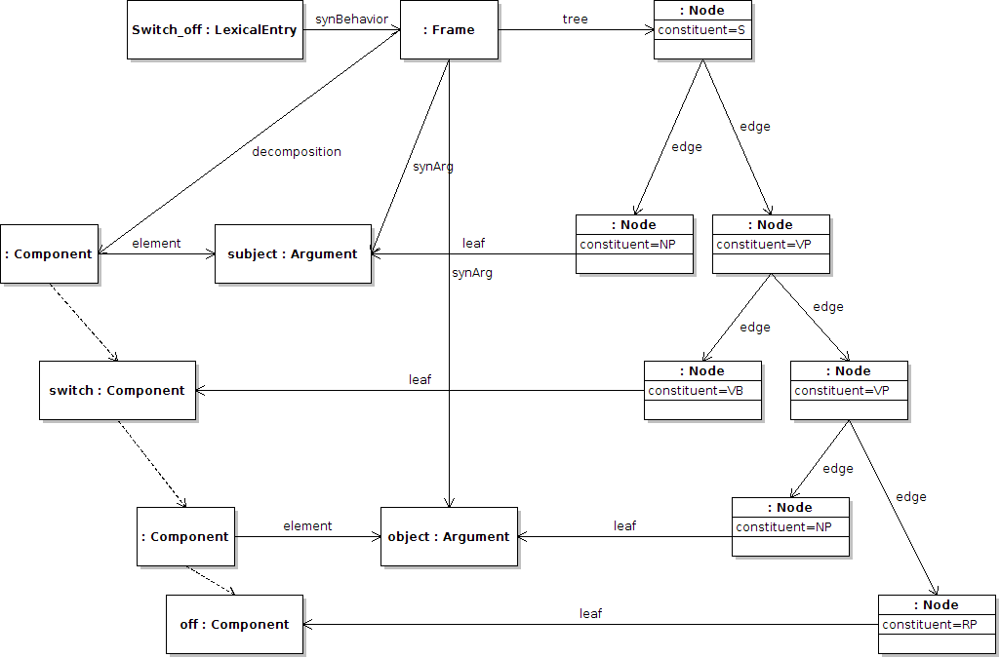

Next: Predicate mapping Up: Syntax and Mapping Module Previous: Frames Contents
lemon frames may also be combined with the multi-word expressions extension to give valid parse trees for a particular frame, creating something similar to the substitution trees used in Tree-Adjoining Grammars. Here the trees are attached to the frame instead of to the lexical entry, and use the property tree, in addition we need to indicate the order of the components in the phrase structure, which is done by adding a decomposition to the frame. Note that this decomposition unlike decompositions of lexical entries may (and in fact must) include the arguments of the frame. For example “X switches Y off” may generate a parse structure as follows:
:switch_off
lemon:synBehavior
[ lemon:synArg :switch_off_subject ,
lemon:synArg :switch_off_object
lemon:tree [
lemon:edge [ lemon:leaf :switch_off_subject ] ;
lemon:edge [
lemon:edge [ lemon:leaf :switch_comp ] ;
lemon:edge [
lemon:edge [ lemon:leaf :switch_off_object ] ;
lemon:edge [
lemon:edge [ lemon:leaf :off_component ]
]
]
]
] ;
lemon:decomposition (
[ lemon:element :switch_off_subject ]
[ lemon:element :switch_comp ]
[ lemon:element :switch_off_object ]
[ lemon:element :off_comp ]
)
] .
